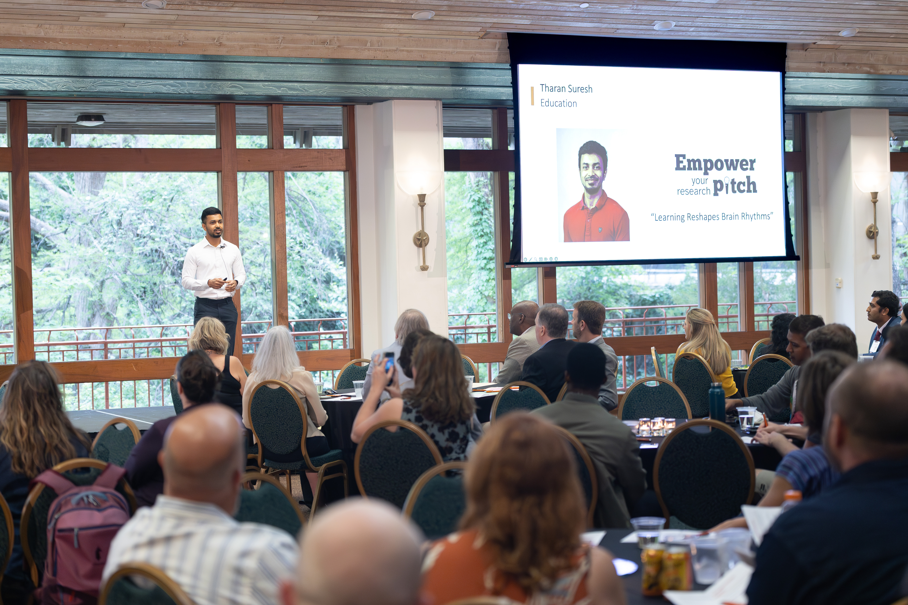
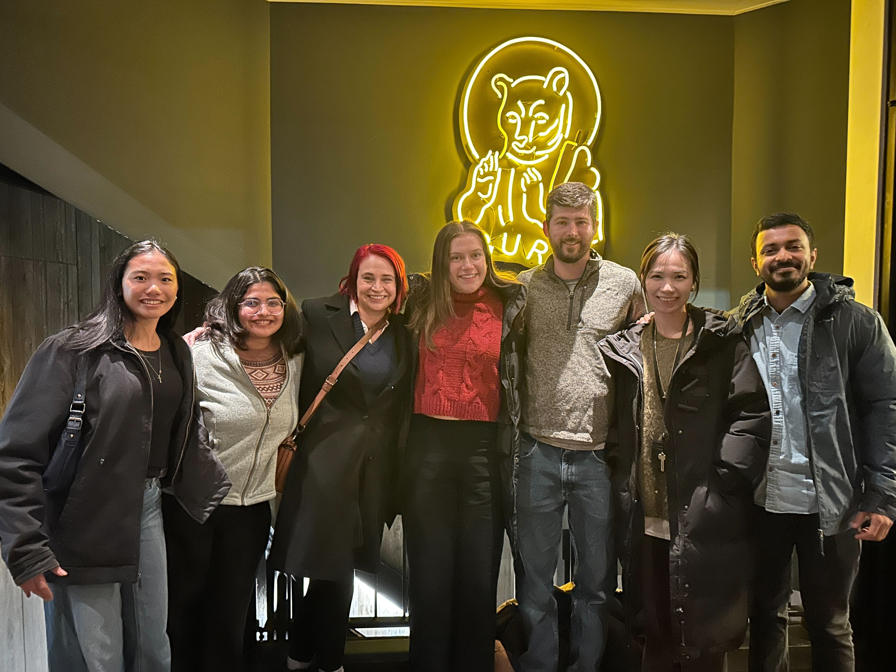
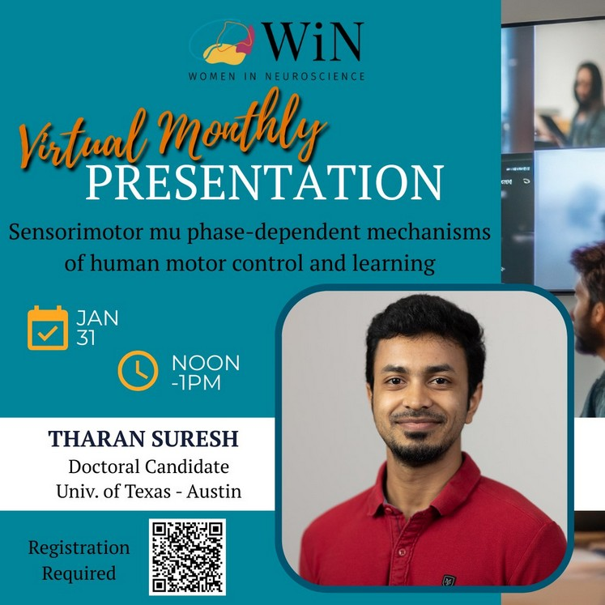
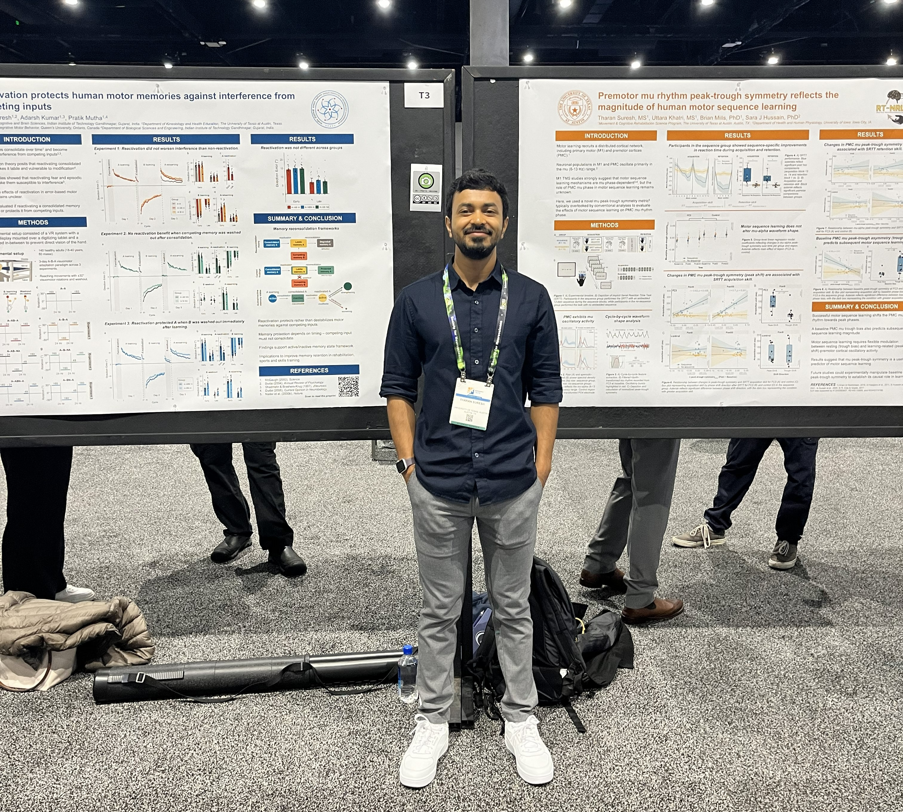

Education
Ph.D. in Movement & Cognitive Rehabilitation Science
The University of Texas at Austin, USA (2021 - 2026 expected)
M.S. in Cognitive Science
Indian Institute of Technology, Gandhinagar, India (2019 - 2021)
B.S. in Clinical Neuroscience
Christian Medical College, Vellore, India (2013 - 2017)
Recent News
April 2026 Empower your pitch finalist!

EYP finals
February 2026 Visited the Real-time Neuro Reahabilitation Lab at the University of Iowa

Iowa Lab Visit
January 2026 Invited to present research to Women in Neuroscience at Austin

Invited talk at Women in Neuroscience
November 2025 - Presented 2 posters - one on motor memory reactivation and the other on mu waveform shape changes after motor sequence learning at SfN in San Diego, CA

Poster presentation at Society for Neuroscience 2025
November 2025 - New paper on micro-offline gains in motor learning published in Nature Scientific Reports
October 2025 - New paper in collaboration with Dr. Timothy Lowe published in Medicine & Science in Sports & Exercise
July 2025 - Invited talk at University of Oxford on sensorimotor mu phase mechanisms
June 2025 - New preprint on motor memory reactivation available on bioRxiv
June 2025 - New paper published in JNeurophysiology on motor sequence learning
May 2025 - Invited talk with Brain Box Initiative on motor sequence learning
April 2025 - Awarded Graduate School Continuing Fellowship at UT Austin
March 2025 - Uttara Khatri presented our work at American Society of Neurorehabilitation Annual Meeting